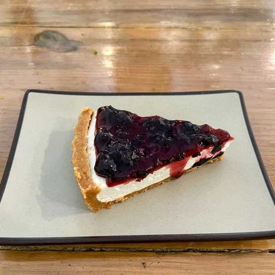
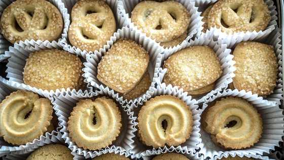
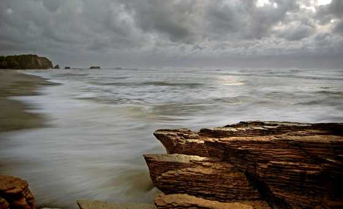
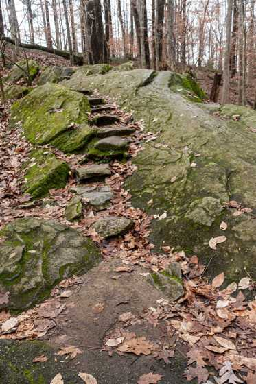
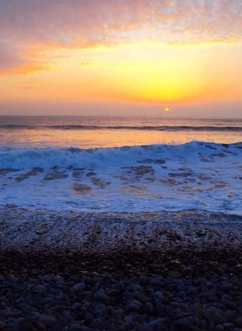

にゃむにゃむ、と
口もとがゆるむ、
ひと休みを。
北海道登別市中央町の「にゃむにゃむ」。おいしいものをほおばる、あの小さなしあわせの音を、そのまま店の名前にしたようなお店です。
このコンセプトの言い回しは制作側のイメージです。


お店のこと
「にゃむにゃむ」は、北海道登別市中央町にあるお店です。Instagram(@nyamnyam_0630_)で様子が発信されています。
店名の「にゃむにゃむ」は、おいしそうに食べるときの音を思わせる響きです。ただし、店名の由来や込められた意味は確認できていません。ここでの読み方は制作側のイメージで、お店の公式な説明ではありません。
業態・扱っている商品・営業の詳細など、公開情報で確かめられなかったことは「準備中」とし、お店からお知らせをいただいた内容に差し替える前提で作っています。
情報源: Instagram @nyamnyam_0630_(店名・所在地のみ確認。由来・メニューの記載は確認できず)



口コミ(イメージ例)
実際のお客様の声ではありません。イメージとして制作側が作成した文章です。
イメージ例
ちょっと疲れた日に、ふらっと寄りたくなる雰囲気だといいな。
イメージ例
名前がかわいくて、つい口に出してしまいそうです。
イメージ例
営業日や場所がひと目で分かると、友人も誘いやすいです。
アクセス
| 所在地 | 〒059-0012 北海道登別市中央町4丁目9-3 |
|---|---|
| 電話 | 準備中 |
| 営業時間 | 準備中 |
| 定休日 | 準備中 |
| SNS | Instagram @nyamnyam_0630_ |
営業時間などは変更されることがあるため、掲載せず「準備中」としています。最新情報はInstagramをご覧ください。